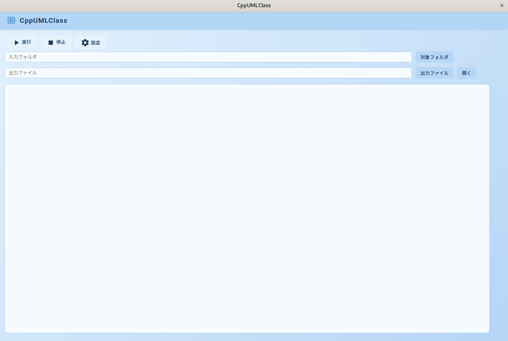
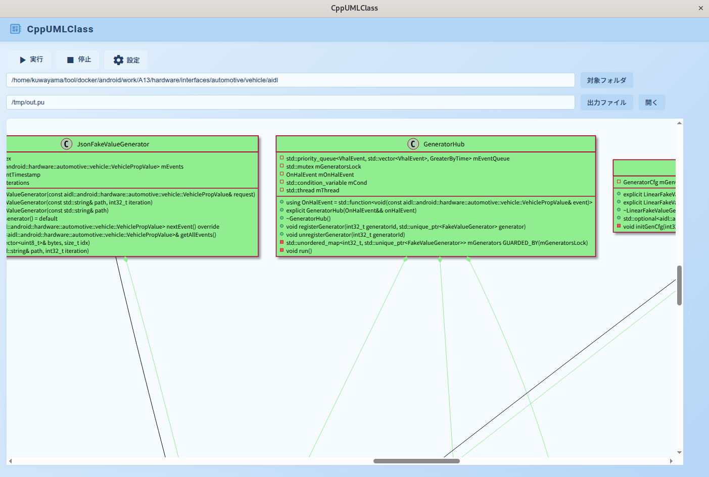
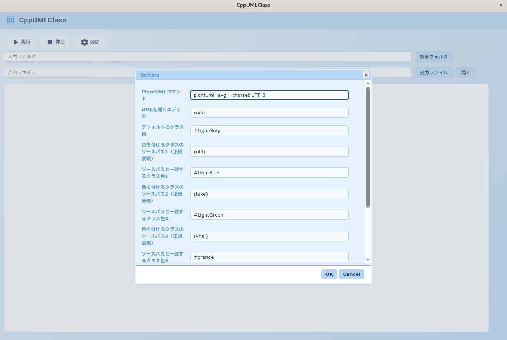
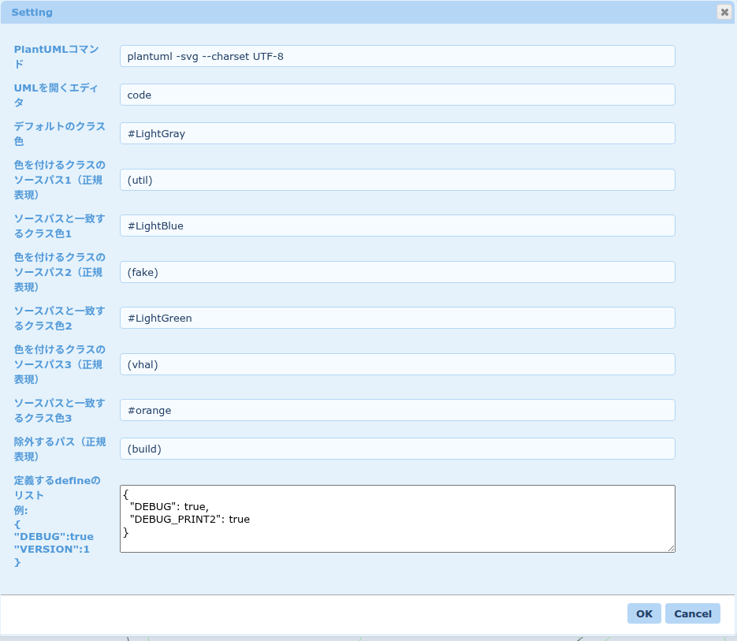

概要
指定したソースコードフォルダからクラス図を作成し、PlantUMLのテキストファイルで出力します。
インストール (Ubuntu)
sudo apt update
sudo apt install -y ruby ruby-all-dev chromium-browser plantuml clang-format gcc
sudo gem install CppUmlClass起動方法
以下を実行してください:
start_cpp_uml_class.rbメモ: root 権限が必要なコマンドには sudo を付けてください。
使い方
対象のソースフォルダと出力ファイル名を指定して「実行」をクリックします。
詳しい操作手順は下記の動画をご覧ください。

コマンドラインでの実行例
# ソースフォルダから PlantUML (.puml) を生成
create_cpp_uml_class.rb cpp_source_dir out_plantuml.puml
# 設定ファイルを指定して実行
create_cpp_uml_class.rb -c config_file.json cpp_source_dir out_plantuml.puml
# 設定ファイルを指定しない場合、デフォルトの設定ファイルが使用されます。
# デフォルトの設定ファイル:~/CppUmlClass/config/setting.json
# ヘルプ表示
create_cpp_uml_class.rb --help
Usage: create_cpp_uml_class.rb [options] cpp_source_directory out_file
-c config_file
ヒント: 生成した .puml は plantuml コマンドで PNG/SVG に変換できます。
詳しい操作手順は下記の動画をご覧ください。


画面例
主要な画面例です。画像をクリックで拡大表示します。
- 起動画面: 入力フォームにフォルダと出力先を指定する画面。
- クラス図出力例: 解析結果の UML クラス図。


設定画面
設定画面では出力や解析の詳細を指定できます。主な項目:
- PlantUML コマンド: PlantUMLの実行コマンドをカスタマイズ
- UMLを開くエディタ: 作成されたUMLを表示するエディタを指定
- デフォルトのクラス色: クラス図のデフォルト色を指定
- 色を付けるクラスのソースパス1〜3: 色を付けるクラスのソースパス
- ソースパスと一致するクラス色1〜3: ソースパスと一致するクラスの色を指定
- 除外するパス: UMLに変換する対象から除外するパス
- 定義するdefineのリスト: プリプロセッサのdefineを指定
設定はプロジェクト単位で保存でき、よく使う設定はプリセットとして保存・読み込みできます。
